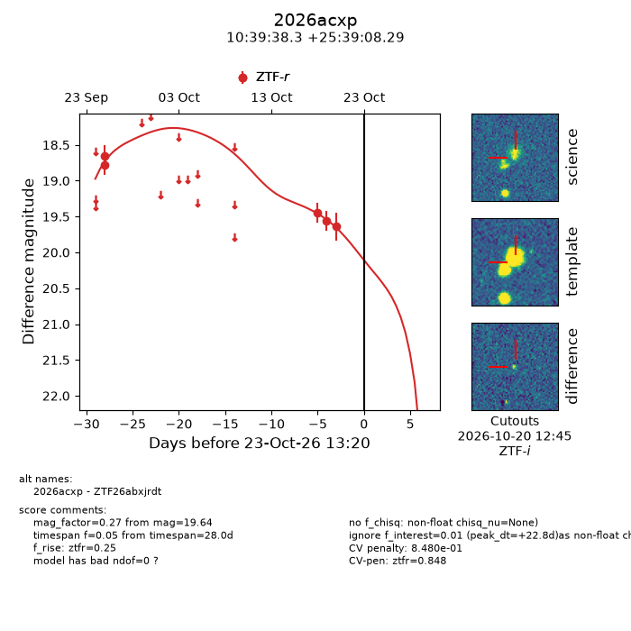
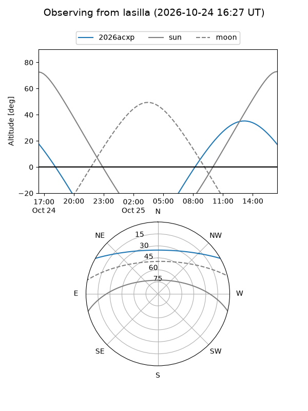
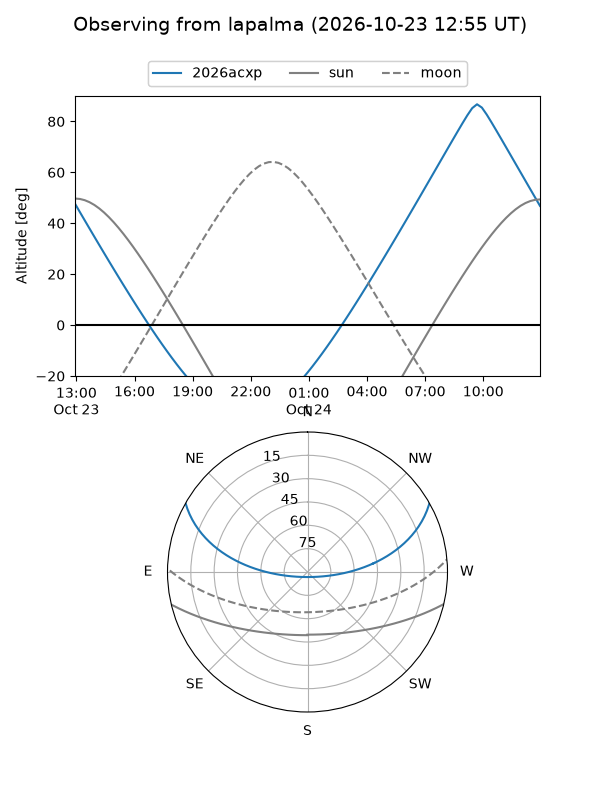
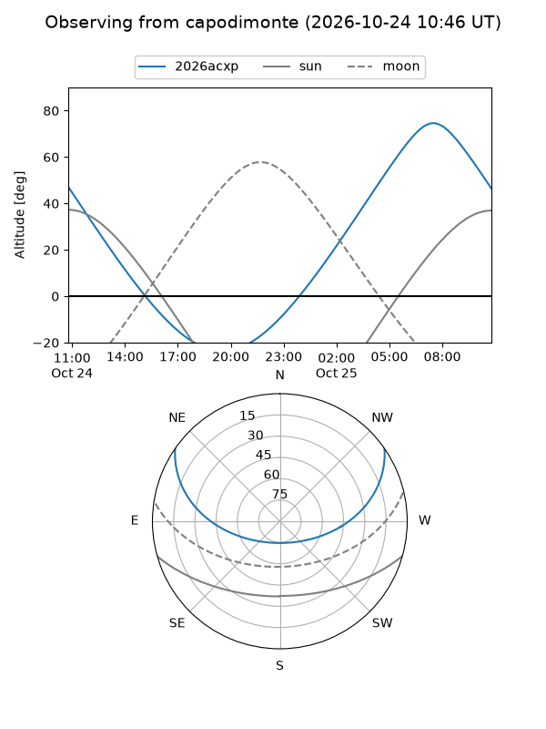
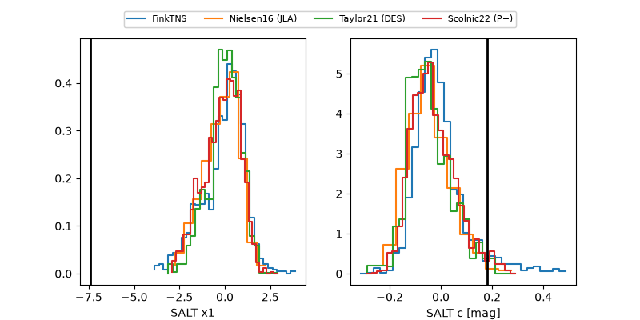

2026acxp
Target 2026acxp at 2026-10-23 13:22
Aliases and brokers:
FINK-ZTF: ztf.fink-portal.org/ZTF26abxjrdt
Lasair-ZTF: lasair-ztf.lsst.ac.uk/objects/ZTF26abxjrdt
ALeRCE-ZTF: alerce.online/object/ZTF26abxjrdt
YSE-PZ: ziggy.ucolick.org/yse/transient_detail/2026acxp
TNS name: wis-tns.org/object/2026acxp
Direct TNS query: direct search
alt names
ZTF26abxjrdt (ztf,fink_ztf)
2026acxp (tns,yse)
Coordinates:
equatorial (ra, dec) = 159.9097,+25.65230
equatorial (HMS+DMS) = 10:39:38.34,+25:39:08.29
galactic (l, b) = (208.2261,+60.53096)
Flags:
peak dt: +22.8
likely cv: !!
CV pen: 0.8480155493952709
Photometry:
last ztfr=19.64
5 ztfr detections
Lightcurve

Visibility



Additional plots
